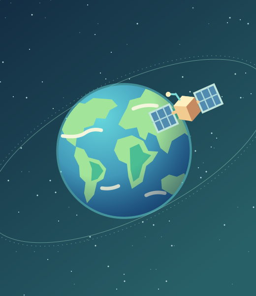

THCS Nga SơnSản phẩm dự thi STEM

Môi trường · Địa lý thế giới
Quỹ Đạo Xanh
Trái Đất
 Cói chào nhà thám hiểm!
Cói chào nhà thám hiểm!
Ghé các kỳ quan để giúp Trái Đất xanh trở lại.
Chạm kỳ quan, vuốt ngang hoặc dùng ◀ ▶ để chọn trạm. Nhấn Enter để khám phá.
Đọc thông điệp, chọn A/B/C. Đáp án đổi vị trí mỗi lượt.
Mỗi câu đúng giúp dọn rác vũ trụ, phục hồi Trái Đất tới 100% và mở pháo hoa.